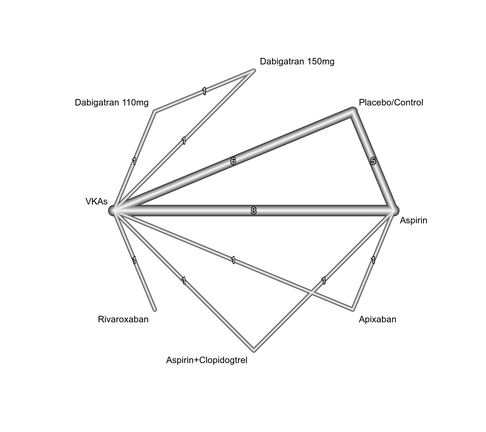
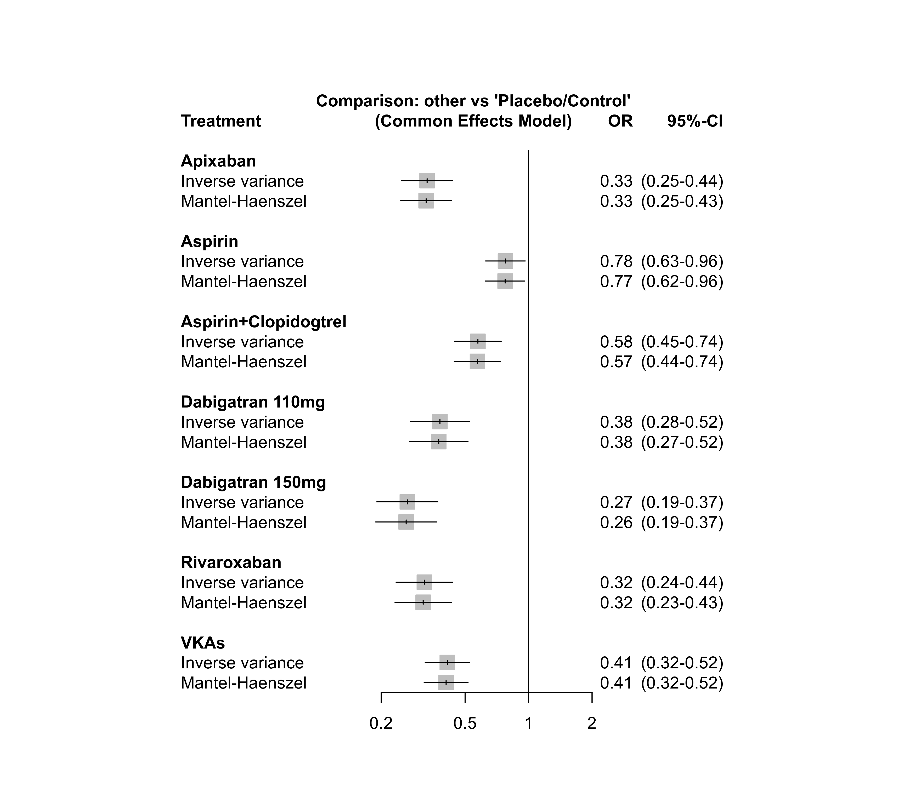
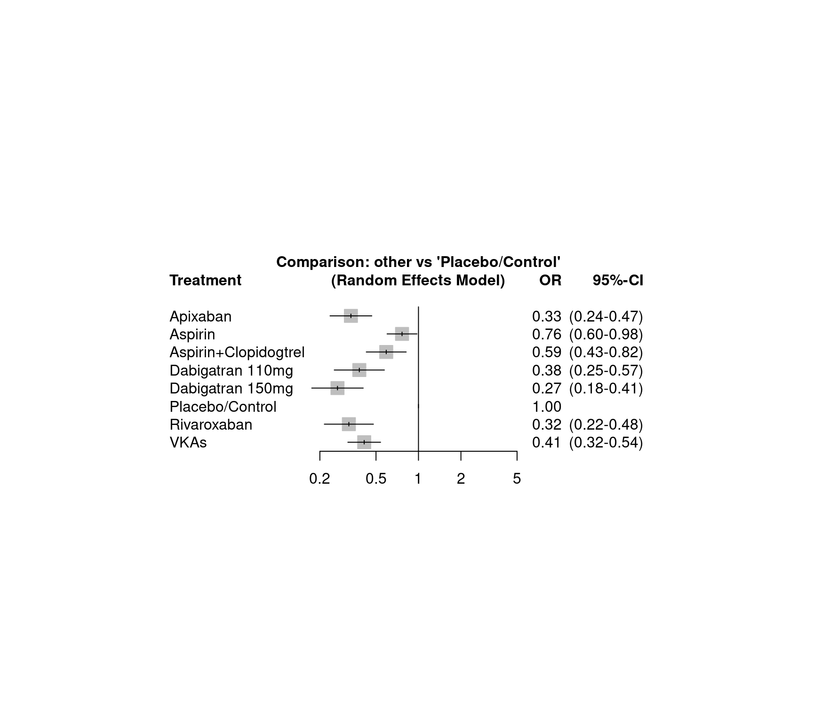

dat.dogliotti2014.RdResults from 20 trials examining the effectiveness of antithrombotic treatments to prevent strokes in patients with non-valvular atrial fibrillation.
dat.dogliotti2014The data frame contains the following columns:
| study | character | study label |
| id | numeric | study ID |
| treatment | character | treatment |
| stroke | numeric | number of strokes |
| total | numeric | number of individuals |
This data set comes from a systematic review aiming to estimate the effects of eight antithrombotic treatments including placebo in reducing the incidence of major thrombotic events in patients with non-valvular atrial fibrillation (Dogliotti et al., 2014).
The review included 20 studies with 79,808 participants, four studies are three-arm studies. The primary outcome is stroke reduction (yes / no).
Dogliotti, A., Paolasso, E., & Giugliano, R. P. (2014). Current and new oral antithrombotics in non-valvular atrial fibrillation: A network meta-analysis of 79808 patients. Heart, 100(5), 396–405. https://doi.org/10.1136/heartjnl-2013-304347
medicine, odds ratios, network meta-analysis, Mantel-Haenszel method
### Show first 7 rows / 3 studies of the dataset
head(dat.dogliotti2014, 7)
#> study id treatment stroke total
#> 1 AFASAK-I 1989 1 VKAs 9 335
#> 2 AFASAK-I 1989 1 Aspirin 16 336
#> 3 AFASAK-I 1989 1 Placebo/Control 19 336
#> 4 BAATAF 1990 2 VKAs 3 212
#> 5 BAATAF 1990 2 Placebo/Control 13 208
#> 6 CAFA 1991 3 VKAs 6 187
#> 7 CAFA 1991 3 Placebo/Control 9 191
# \dontrun{
### Load netmeta package
suppressPackageStartupMessages(library(netmeta))
### Print odds ratios and confidence limits with two digits
settings.meta(digits = 2)
### Change appearance of confidence intervals
cilayout("(", "-")
### Transform data from long arm-based format to contrast-based
### format. Argument 'sm' has to be used for odds ratio as summary
### measure; by default the risk ratio is used in the metabin function
### called internally.
pw <- pairwise(treat = treatment, n = total, event = stroke,
studlab = study, data = dat.dogliotti2014, sm = "OR")
### Print log odds ratios (TE) and standard errors (seTE)
head(pw, 5)[, 1:5]
#> studlab treat1 treat2 TE seTE
#> 1 AFASAK-I 1989 VKAs Aspirin -0.5939405 0.4240325
#> 2 AFASAK-I 1989 VKAs Placebo/Control -0.7752100 0.4122678
#> 3 AFASAK-I 1989 Aspirin Placebo/Control -0.1812695 0.3484410
#> 4 BAATAF 1990 VKAs Placebo/Control -1.5356718 0.6482047
#> 5 CAFA 1991 VKAs Placebo/Control -0.3999555 0.5373985
### Conduct network meta-analysis (NMA) with placebo as reference
net <- netmeta(pw, ref = "plac")
#> Warning: Comparison with missing TE / seTE or zero seTE not considered in network meta-analysis.
#> Comparison not considered in network meta-analysis:
#> studlab treat1 treat2 TE seTE
#> WASPO, 2007 VKAs Aspirin NA NA
#>
### Details on excluded study
selvars <- c("studlab", "event1", "n1", "event2", "n2")
subset(pw, studlab == "WASPO, 2007")[, selvars]
#> studlab event1 n1 event2 n2
#> 28 WASPO, 2007 0 36 0 39
### Show network graph
netgraph(net, seq = "optimal", number = TRUE)

### Conduct Mantel-Haenszel NMA
net.mh <- netmetabin(pw, ref = "plac")
#> Warning: Study 'WASPO, 2007' without any events excluded from network meta-analysis.
### Compare results of inverse variance and Mantel-Haenszel NMA
nb <- netbind(net, net.mh, random = FALSE,
name = c("Inverse variance", "Mantel-Haenszel"))
forest(nb, xlim = c(0.15, 2), at = c(0.2, 0.5, 1, 2))

### Print and plot results for inverse variance NMA
net
#> Number of studies: k = 19
#> Number of pairwise comparisons: m = 27
#> Number of observations: o = 79733
#> Number of treatments: n = 8
#> Number of designs: d = 10
#>
#> Fixed effects model
#>
#> Treatment estimate (sm = 'OR', comparison: other treatments vs 'Placebo/Control'):
#> OR 95%-CI z p-value
#> Apixaban 0.33 (0.25-0.44) -7.79 < 0.0001
#> Aspirin 0.78 (0.63-0.96) -2.28 0.0224
#> Aspirin+Clopidogtrel 0.58 (0.45-0.74) -4.26 < 0.0001
#> Dabigatran 110mg 0.38 (0.28-0.52) -5.92 < 0.0001
#> Dabigatran 150mg 0.27 (0.19-0.37) -7.77 < 0.0001
#> Placebo/Control . . . .
#> Rivaroxaban 0.32 (0.24-0.44) -7.21 < 0.0001
#> VKAs 0.41 (0.32-0.52) -7.22 < 0.0001
#>
#> Random effects model
#>
#> Treatment estimate (sm = 'OR', comparison: other treatments vs 'Placebo/Control'):
#> OR 95%-CI z p-value
#> Apixaban 0.33 (0.24-0.47) -6.35 < 0.0001
#> Aspirin 0.76 (0.60-0.98) -2.16 0.0310
#> Aspirin+Clopidogtrel 0.59 (0.43-0.82) -3.17 0.0015
#> Dabigatran 110mg 0.38 (0.25-0.57) -4.63 < 0.0001
#> Dabigatran 150mg 0.27 (0.18-0.41) -6.17 < 0.0001
#> Placebo/Control . . . .
#> Rivaroxaban 0.32 (0.22-0.48) -5.56 < 0.0001
#> VKAs 0.41 (0.32-0.54) -6.51 < 0.0001
#>
#> Quantifying heterogeneity / inconsistency:
#> tau^2 = 0.0134; tau = 0.1158; I^2 = 14.7% (0.0%-51.2%)
#>
#> Tests of heterogeneity (within designs) and inconsistency (between designs):
#> Q d.f. p-value
#> Total 18.76 16 0.2815
#> Within designs 13.17 11 0.2827
#> Between designs 5.59 5 0.3480
forest(net)

# }